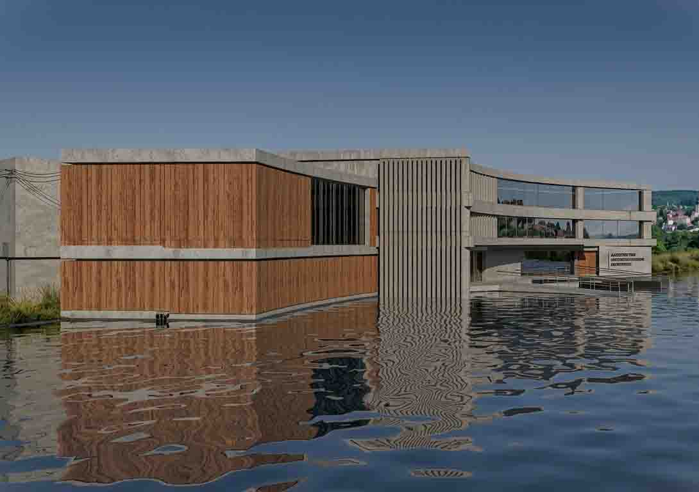
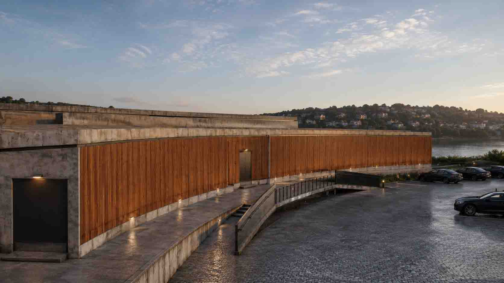
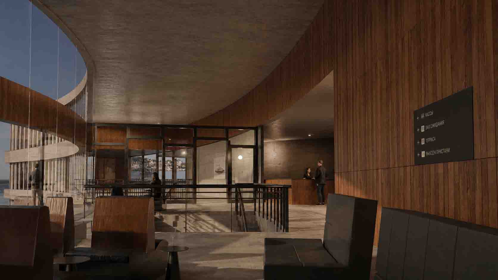
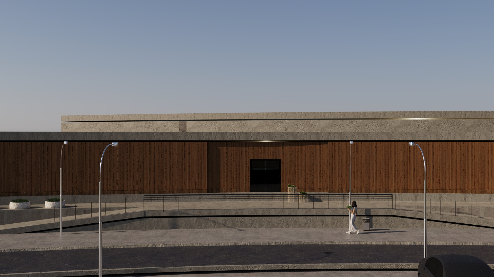
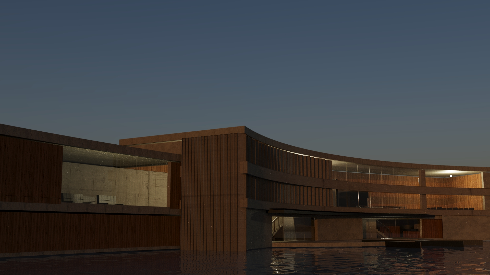
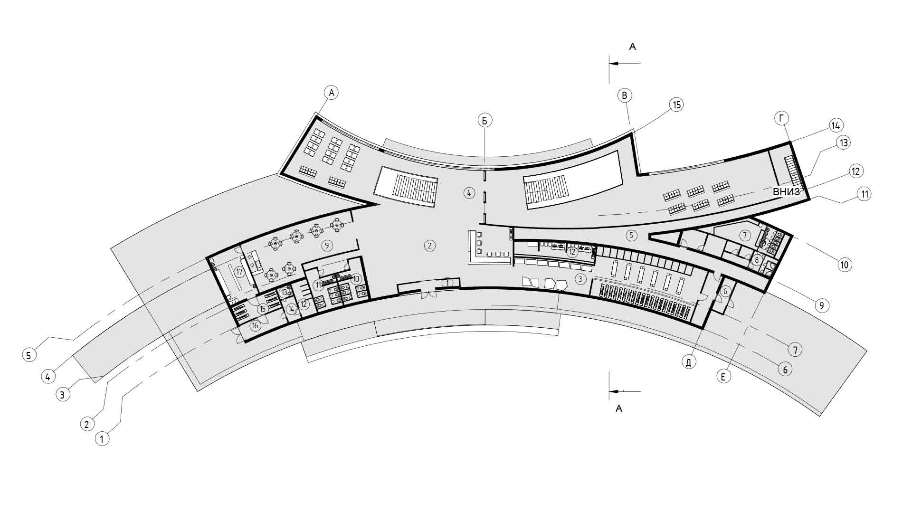
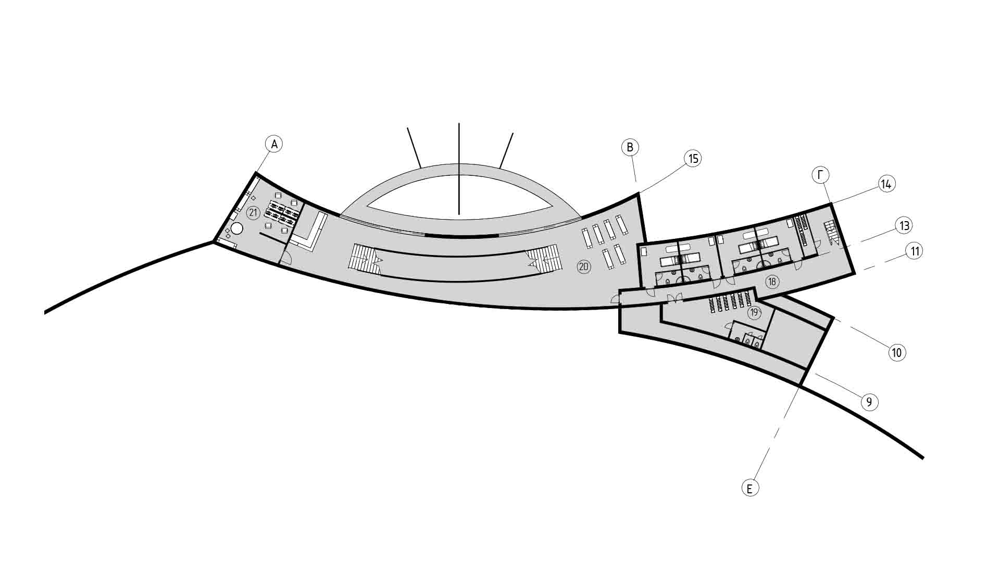
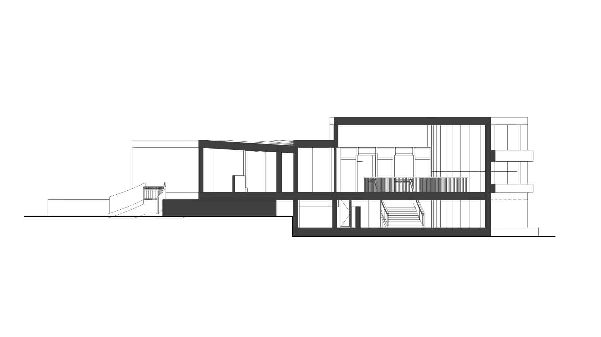
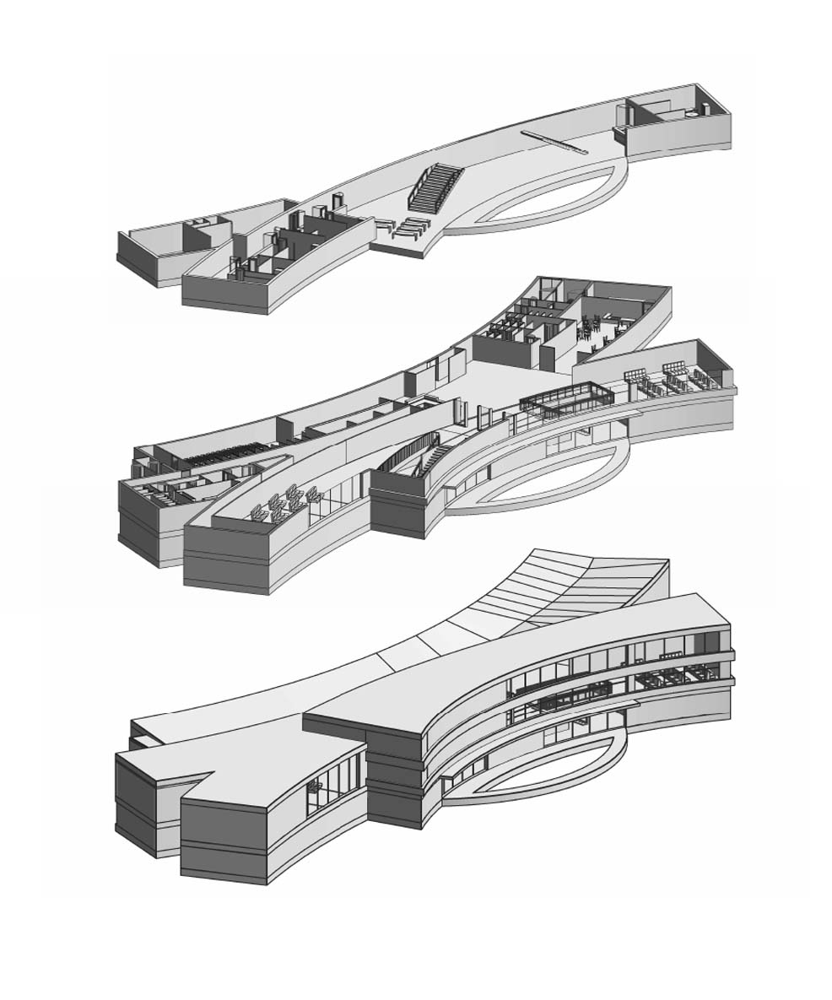
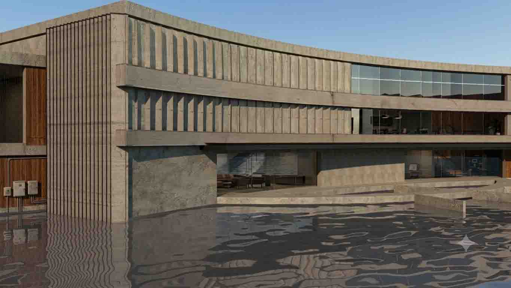

Вход в парк
Проект речного вокзала — это архитектурное переосмысление водного фасада города, где здание выступает связующим звеном между городской набережной и акваторией. Динамичная, изогнутая форма объема повторяет естественный изгиб берега, создавая выразительный силуэт, а четкое функциональное зонирование уровней обеспечивает комфортное разделение пассажирских потоков. Сочетание монументальной тектоники и панорамного остекления превращает объект из утилитарного терминала в активный общественный центр, проницаемый для горожан и открытый к реке.






01 / Архитектурно-конструктивный и планировочный анализ проекта
Генеральный план и посадка здания:
Объект размещен на сложном береговом рельефе с интеграцией в существующую топографию. Геометрия плана повторяет изогнутую линию берега, образуя замкнутую пешеходную площадь со стороны города и вытянутый фронт причала шириной до 3 метров со стороны акватории. Посадка здания оптимизирует пятно застройки, распределяя нагрузку между материковым грунтом и свайным основанием.
Объемно-планировочное решение и функциональное зонирование:
Здание запроектировано как многоуровневый транспортно-общественный узел. В основу планировочной структуры заложен принцип строгого разделения потоков (для предотвращения столпотворений на входе/выходе).Цокольный / нижний уровень: обеспечивает непосредственный выход на причальную линию.Основной уровень (1 этаж):
Включает входную группу (вестибюль с тамбуром), кассовые узлы, административный блок и распределительный зал ожидания. Верхний уровень / антресоли: организовано многосветное пространство зала ожидания с устройством лестниц и балконов, где размещены объекты попутного обслуживания (буфет с подсобными помещениями, торговые киоски). Организован технологический подъезд для загрузки буфета со стороны города.Конструктивная схема и тектоника фасадов:
Каркасная стоечно-балочная система из монолитного железобетона. Продольная жесткость здания обеспечивается шагом несущих колонн и пилонов. Архитектурный облик сформирован за счет контраста глухих участков стен и панорамного остекления, обеспечивающего инсоляцию общественных зон. Вертикальный ритм фасадных ламелей выполняет функцию солнцезащиты (жалюзи-скрины) и распределяет визуальную нагрузку протяженного закругленного фасада.




02 / Градостроительный контекст
Учитывая тенденцию к централизации и росту плотности застройки, павильон проектируется как новая градостроительная доминанта, формирующая силуэт города со стороны акватории. Объект берет на себя роль «парадных ворот», структурируя хаотичную прибрежную среду и создавая узнаваемый архитектурный маркер идентичности места.